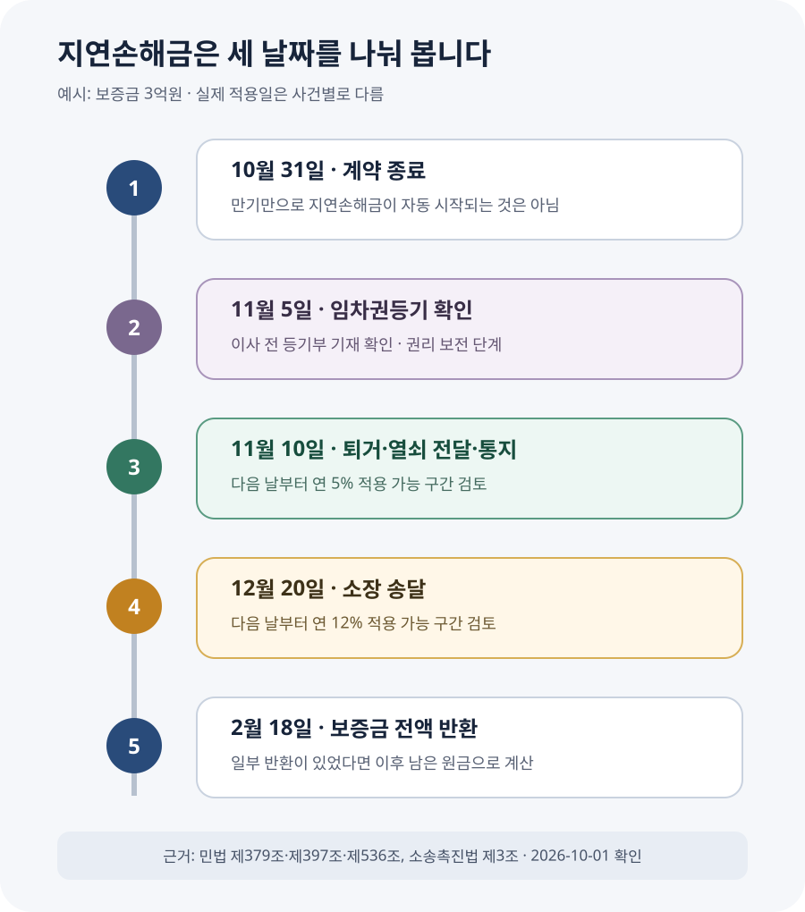

‘만기일·집 인도일·소장 송달일’은 같은 날이 아닙니다
전세계약 만료가 다가오는데 집주인이 “새 세입자가 들어와야 보증금을 줄 수 있다”고 말하면 세입자는 만기 다음 날부터 이자가 붙는다고 생각하기 쉽습니다. 하지만 계약이 끝난 것과 집주인이 법적으로 지체 상태가 되는 것은 구분해야 합니다.
민법 제536조는 쌍무계약에서 상대방이 자기 의무를 제공할 때까지 이행을 거절할 수 있다고 정합니다. 임대차가 끝날 때 집주인은 보증금을 돌려주고 세입자는 집을 넘겨야 하므로, 두 의무는 보통 동시에 이행할 관계입니다. 세입자가 계속 집을 사용하면서 열쇠도 넘기지 않았다면 집주인은 아직 주택을 돌려받지 못했다고 다툴 수 있습니다.
대법원 2001다77697 판결도 임대인의 반환 지체책임을 인정하려면 세입자가 주택 인도의 이행을 제공해야 한다고 봤습니다. 세입자가 퇴거했더라도 그 사실을 집주인에게 알리지 않았다면 인도를 제공했다고 보기 어렵다고 판단했습니다. 즉 짐을 뺀 사실뿐 아니라 집주인이 집을 넘겨받을 수 있게 알리고 열쇠·비밀번호를 전달한 기록까지 중요합니다.
| 날짜 | 무엇이 달라지나 | 확인할 증거 |
|---|---|---|
| 계약 종료일 | 보증금 반환과 주택 인도 의무가 이행기에 도달 | 계약서, 갱신거절·해지 통지 도달일 |
| 주택 인도·이행제공일 | 집주인의 지연책임 시작일을 판단하는 핵심 | 퇴거 사진, 열쇠·비밀번호 전달, 인도 통지 |
| 소장 등 송달일 | 다음 날부터 연 12% 적용 가능성 검토 | 법원 사건조회, 송달증명원 |
| 일부 반환일 | 이후에는 남은 보증금을 기준으로 계산 | 통장 입금내역, 반환 합의서 |
집을 넘겼다는 사실은 말보다 기록으로 남기세요
이행제공이라는 말은 어렵지만, 일상어로 바꾸면 “집주인이 원하면 바로 집을 돌려받을 수 있는 상태를 만들고 그 사실을 알리는 것”에 가깝습니다. 짐을 모두 빼고 청소한 뒤 계량기와 내부 상태를 촬영하고, 열쇠나 공동현관 출입수단을 어떤 방식으로 전달할지 집주인과 정하세요.
집주인이 연락을 피한다면 문자와 내용증명에 퇴거일, 집을 비운 사실, 열쇠를 받을 방법, 보증금 입금계좌를 적어 보냅니다. 열쇠를 일방적으로 우편함에 넣는 방식은 분실과 인도 시점 분쟁이 생길 수 있으므로, 수령 방법을 먼저 제안하고 답변을 남기는 편이 안전합니다. 중개사무소나 관리사무소에 열쇠를 맡긴다면 집주인이 그 보관을 동의했는지도 기록하세요.
내용증명은 계약 종료와 반환 요구, 인도 방법을 알렸다는 증거가 될 수 있지만 실제 점유 이전과 열쇠 전달을 자동으로 대신하지 않습니다. 반대로 짐만 빼고 아무 연락을 하지 않아도 시작일을 입증하기 어렵습니다. 퇴거와 통지를 한 묶음으로 남기세요.

보증금 3억원을 100일 늦게 받는 사례
보증금 3억원인 세입자 A의 계약이 10월 31일 끝났다고 가정하겠습니다. A는 보증금을 받지 못해 임차권등기를 마친 뒤 11월 10일 짐을 모두 빼고 열쇠 전달과 퇴거 사실을 집주인에게 알렸습니다. 반환소송 소장은 12월 20일 집주인에게 송달됐고, 집주인은 다음 해 2월 18일 전액을 지급했습니다.
이 예시에서는 만기 다음 날인 11월 1일부터 곧바로 계산하지 않습니다. 집 인도와 통지를 마친 다음 날인 11월 11일부터 소장 송달일인 12월 20일까지 40일은 연 5%, 송달 다음 날인 12월 21일부터 지급일인 2월 18일까지 60일은 연 12%로 단순 계산합니다.
| 구간 | 계산식 | 예시 금액 |
|---|---|---|
| 인도 다음 날~소장 송달일 40일 | 3억원 × 5% × 40 ÷ 365 | 약 164만원 |
| 소장 송달 다음 날~지급일 60일 | 3억원 × 12% × 60 ÷ 365 | 약 592만원 |
| 합계 | 두 구간을 더함 | 약 756만원 |
민법 제379조는 별도 규정이나 약정이 없을 때 법정이율을 연 5%로 정하고, 제397조는 금전채무 불이행의 손해배상을 법정이율로 계산하는 기본을 둡니다. 소송 구간은 소송촉진 등에 관한 특례법 제3조와 관련 대통령령에 따라 연 12%가 적용될 수 있습니다.
다만 12%는 단순히 소송을 접수한 날부터 붙는 숫자가 아닙니다. 원칙적으로 소장 또는 이에 준하는 서면이 임대인에게 송달된 다음 날이 기준이고, 임대인이 채무의 존재나 범위를 다투는 데 상당한 이유가 있다고 법원이 판단하면 적용 시작일이 달라질 수 있습니다. 실제 청구취지와 판결 주문을 확인해야 합니다.
집주인이 중간에 1억원을 먼저 돌려줬다면 그날 이후에는 남은 2억원을 기준으로 계산합니다. 원금 3억원 전체에 계속 이자를 붙이면 과다 청구가 됩니다. 반환일마다 원금 잔액을 새로 적은 표를 만들어야 계산이 흔들리지 않습니다.
보증금을 못 받았는데 먼저 이사해야 한다면
보증금을 받기 전에 전출하고 점유를 넘기면 기존 대항력과 우선변제권에 문제가 생길 수 있습니다. 임대차가 끝났는데도 보증금을 못 받은 채 이사해야 한다면 먼저 주택임대차보호법 제3조의3의 임차권등기명령을 검토하세요.
신청서를 냈거나 법원 결정을 받았다는 사실만으로 충분하다고 생각하면 안 됩니다. 등기사항증명서에 임차권등기가 실제로 기재된 것을 확인한 뒤 전출과 이사를 진행하는 것이 안전합니다. 그리고 임차권등기가 됐다는 사실과 주택을 실제로 집주인에게 인도했다는 사실도 구분해야 합니다. 지연손해금의 시작일을 주장하려면 퇴거·열쇠 전달·인도 통지 자료를 함께 남겨야 합니다.
계약이 아직 끝나지 않았거나 갱신거절 통지가 늦어 묵시적 갱신이 문제 되는 경우에는 종료일부터 다시 확인해야 합니다. 이때는 계약 만료 전 이사 절차와 임차권등기명령 안내를 함께 보고, 새집 잔금일보다 현재 계약 종료가 먼저 확정됐는지 확인하세요.
대출이자와 새집 계약금 손해도 전부 받을 수 있을까요?
보증금을 제때 받지 못해 전세대출 이자를 더 냈거나 새집 잔금을 치르지 못해 손해가 생겼다고 해서 그 금액이 지연손해금에 자동으로 더해지는 것은 아닙니다. 집주인이 그런 사정을 알았거나 알 수 있었는지, 실제 손해가 얼마인지, 같은 손해를 지연손해금과 중복 청구하는지 등이 별도 쟁점이 됩니다.
새집 계약과 대출 만기가 걸려 있다면 계약서, 대출약정서, 은행 통지, 집주인에게 미리 알린 문자와 손해 발생 자료를 보관하세요. 금액이 크다면 지연손해금만 청구할지 별도 손해까지 주장할지 법률전문가에게 자료를 보여 주고 검토받는 편이 안전합니다.
계산할 때 자주 헷갈리는 경우
아직 살고 있어도 보증금반환소송을 낼 수 있나요?
집을 아직 인도하지 않았다는 이유만으로 반환 청구 자체를 무조건 미뤄야 하는 것은 아닙니다. 법원에는 보증금 지급과 주택 인도를 서로 맞바꾸도록 청구할 수 있습니다. 다만 계속 거주하는 기간의 지연손해금까지 같은 방식으로 인정되는지는 별개입니다. 소송 제기 가능성과 이자 시작일을 한 문제로 생각하지 마세요.
집주인이 열쇠를 받지 않으면 이자를 청구할 수 없나요?
집주인이 일부러 연락을 피하거나 열쇠 수령을 거부한다면 언제, 어떤 방법으로 인도를 제안했는지가 중요해집니다. 빈집 상태 사진, 열쇠 전달 장소를 제안한 문자, 내용증명 도달 내역과 집주인의 답변을 보관하세요. 임의로 열쇠를 버리거나 비밀번호를 공개하는 방식은 보안·훼손 분쟁을 만들 수 있으므로 개별 사건에 맞는 이행제공 방법을 확인하는 편이 좋습니다.
지급명령을 신청하면 바로 연 12%인가요?
신청서를 법원에 낸 날보다 상대방에게 지급명령 정본 등 이에 준하는 서면이 송달된 날이 중요합니다. 상대방이 이의하면 통상 소송절차로 넘어갈 수 있고, 법원이 채무 범위를 다툴 상당한 이유가 있다고 보면 높은 이율의 시작일이 달라질 수도 있습니다. 사건조회 화면의 접수일만 보고 계산하지 말고 송달일과 최종 결정문을 함께 확인하세요.
윤년이나 반환 당일은 어떻게 계산하나요?
이 글의 예시는 이해를 돕기 위해 365일 기준으로 단순 계산했습니다. 실제 청구에서는 시작일·종료일 포함 여부, 윤년, 일부 변제일과 판결 주문의 문구에 따라 일수가 달라질 수 있습니다. 법원 제출용 금액은 날짜별 원금표를 만든 뒤 전자소송 계산 기능이나 전문가 검토로 다시 확인하세요.
집주인이 나눠서 돌려주겠다고 하면 무엇을 적어야 할까요?
분할 반환 자체가 나쁜 선택은 아닙니다. 새집 잔금이나 대출 상환에 필요한 현금을 먼저 확보할 수 있고, 소송 없이 정리할 가능성도 생깁니다. 다만 통화로 “일단 일부만 보내겠다”는 말만 듣고 열쇠를 넘기면 남은 원금과 이자 계산을 두고 다시 다툴 수 있습니다. 합의서에는 전체 보증금, 먼저 받을 금액과 입금일, 남은 원금과 최종 지급일을 숫자로 적으세요.
지연손해금도 따로 정해야 합니다. 일부 금액을 받은 날까지는 기존 원금으로, 그 다음 날부터는 남은 원금으로 계산한다는 점과 이미 발생한 이자를 언제 정산할지를 써 두면 좋습니다. 예를 들어 “10월 20일 1억원을 반환하고, 10월 21일부터 남은 2억원을 기준으로 지연손해금을 계산한다”처럼 날짜와 잔액을 함께 적는 방식입니다. 약정이율을 새로 정한다면 연 이율과 적용 시작일도 명확히 하세요.
특히 “이 돈을 받으면 모든 채권·채무가 끝난다”거나 “추가 청구를 하지 않는다”는 문구는 남은 보증금과 이자까지 포기한 것으로 해석될 여지가 있으므로 그대로 서명하지 마세요. 반대로 집주인도 세입자가 주택을 언제 비우고 열쇠를 어떻게 넘길지 확인할 필요가 있습니다. 주택 인도일, 열쇠 전달 방법, 관리비 정산 기준일을 같은 문서에 적고, 입금내역과 서명본을 함께 보관하면 각 의무를 언제 이행했는지 설명하기 쉬워집니다.
분할 합의가 지켜지지 않을 때의 처리도 빠뜨리지 마세요. 남은 금액의 지급기한을 넘기면 어떤 이율을 적용할지, 이미 합의한 반환 일정이 기존 권리의 포기를 뜻하는지 여부를 문장으로 분명히 해야 합니다. 보증금이 크거나 소송이 이미 시작됐다면 합의서에 서명하기 전에 변호사 등 법률전문가에게 문구를 확인받는 편이 안전합니다.
지연손해금 계산 전에 모을 자료
- □ 계약 종료일과 갱신거절·해지 통지가 도달한 날을 확인했다.
- □ 이사 전 임차권등기가 등기부에 실제 기재됐는지 확인했다.
- □ 퇴거 직후 빈집 상태와 계량기를 사진·영상으로 남겼다.
- □ 열쇠·비밀번호 전달 방법과 집주인에게 알린 시각을 보관했다.
- □ 소장 또는 지급명령 등 서면이 송달된 날짜를 확인했다.
- □ 보증금 일부 반환이 있었다면 날짜별 원금 잔액을 다시 계산했다.
- □ 계약서의 별도 지연손해금 약정과 임대인의 반론을 확인했다.
공식 근거
- 국가법령정보센터 — 민법 제379조(법정이율)
- 국가법령정보센터 — 민법 제397조(금전채무불이행에 대한 특칙)
- 국가법령정보센터 — 민법 제536조(동시이행의 항변권)
- 국가법령정보센터 — 소송촉진 등에 관한 특례법 제3조
- 국가법령정보센터 — 소송촉진법상 법정이율 대통령령
- 국가법령정보센터 — 대법원 2001다77697 판결
정보 기준일: 2026-10-01. 계산은 1년 365일과 예시 날짜를 사용한 단순 비교이며 실제 소송의 청구기간·이율·일수 계산을 확정하지 않습니다. 계약 종료 여부, 주택 인도 또는 이행제공, 임차권등기, 일부 변제, 약정이율과 임대인의 항변에 따라 결과가 달라질 수 있습니다. 이 글은 개별 사건에 대한 법률 자문이 아닙니다.